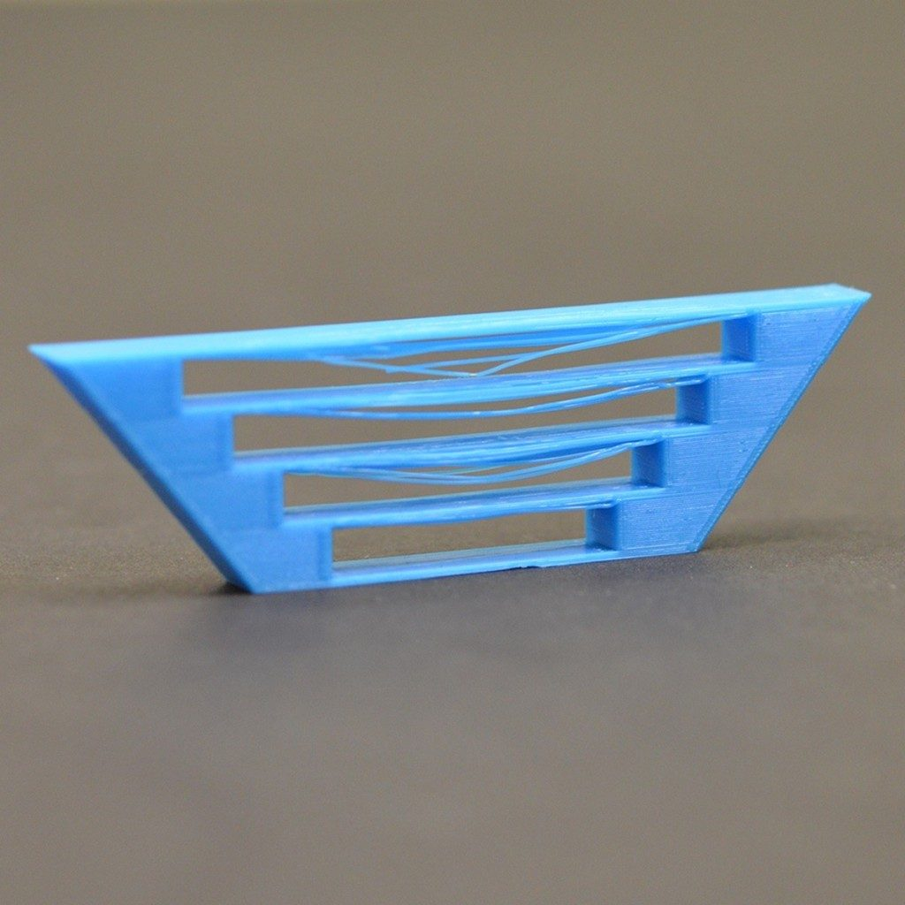
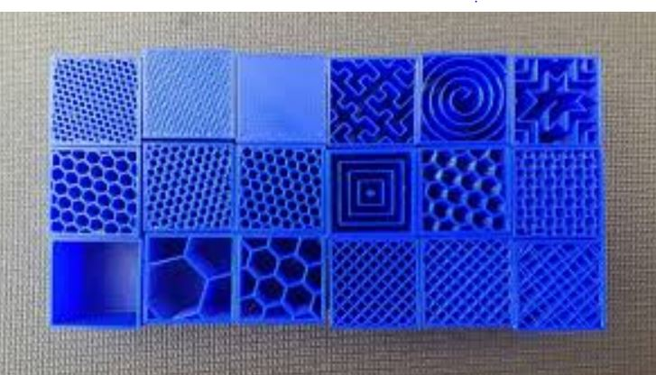

Embedded Programming
Introduction
In this topic , we worked with many eletrical components and C# programming language.
Despite having prior experience with the microbit and C# programming, this topic is undoubtedly the most challenging for me.
Arduino Uno
The Arduino Uno ,which I like to think of as an updated Microbit , is what we will be using throughtout the whole topic.

Common Components
Bridging
Bridging is very similar to an overhang.The only difference is that bridging involves linking two raised points horizontally
Solution
Same as overhang
Raft , Brim and Skirts
Raft ,Brim and Skirts are something like base supports that ensure that printing goes smoothly so that the print material will not go to waste.
Raft
Raft is used to support 3D prints ,with small bases, by creating a strong foundation. Raft also improves bed adhesion and prevent warping.However a raft uses a lot of material.
Brim
Brim is very similar to Raft except that Brim isnt as strong of a support and is used to hold down the edges of a print.
Like Raft , it also improves bed adhesion and prevent warping.
Skirt
Skirt does not serve as a base support unlike Raft and Brim , instead it is used for priming the extruder and early detection of any printing errors.
Infills
Infills are what make up the inner structure of a print.
Infill density
A high infill density makes the print heavier and stronger.However it takes a lot longer , the denser the infill is. A low infill denisty makes the print more fragile and light but it uses way lesser materials and saves time.In Fablab, it is recommended that

- 10%-15% infill for prototyping
- 20%-25% for finalising prototypes
- 30%-35% for large objects and should be avoided if possible
- 50%-100% should never be used because it is really slow and wastes material